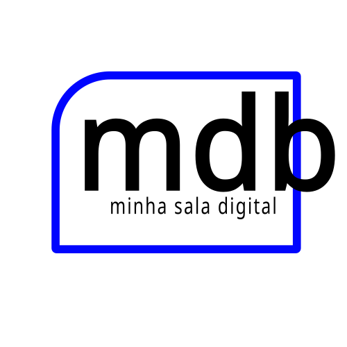

Bem-vindo à Minha Sala Digital
Entre com seu e-mail e senha para acessar suas turmas.
Criar minha conta
Cadastre-se e solicite o vínculo com seu professor. A aprovação é necessária para acessar as turmas ou atuar como professor.

Minha Sala Digital 1.4.2Entre com seu e-mail e senha para acessar suas turmas.
Cadastre-se e solicite o vínculo com seu professor. A aprovação é necessária para acessar as turmas ou atuar como professor.